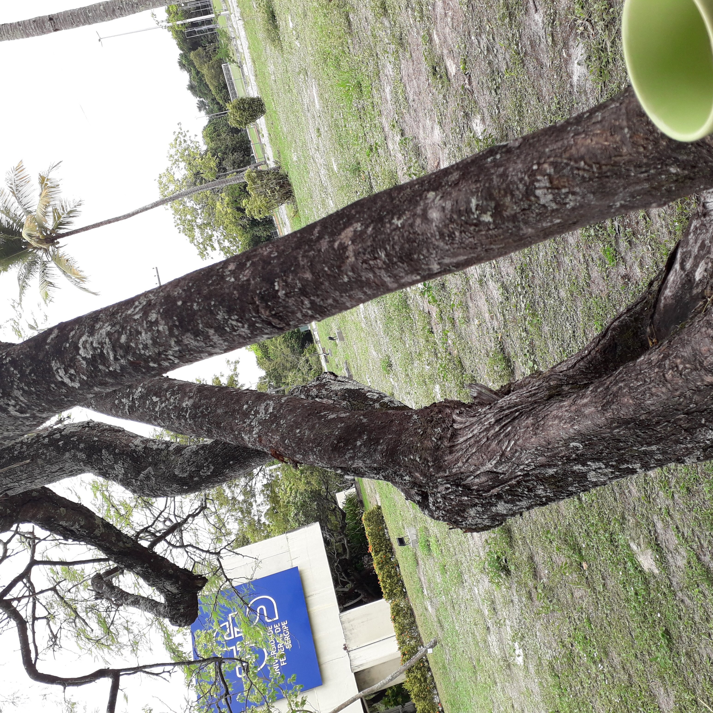

Minha história
Na minha jornada, acredito muito no valor do esforço e da dedicação pessoal, mas tenho plena certeza de que o apoio de familiares, amigos e instituições fazem toda a diferença. Minha história começa exatamente assim.
Venho de uma família simples. Meus pais não tiveram a oportunidade de estudar, mas, mesmo assim, sempre prezaram muito pela minha educação. Trabalhei por um bom tempo como ajudante do meu pai — que é pedreiro —, fazendo rejunte de azulejos. Ele nunca me obrigou a trabalhar, mas eu fazia questão de suar a camisa para ter meu próprio dinheiro e não depender totalmente dele, que já arcava com todas as despesas da casa.
Foi juntando esse dinheiro que conquistei meu primeiro computador: um inesquecível PC CCE Info (Intel Atom D425 1.80GHz e 2GB de RAM). — Pois é, era uma máquina bem simples, mas era o que o meu dinheiro comprava na época. E para mim, valia muito!
Conciliar o cansaço do trabalho braçal com a vontade de aprender não era fácil, mas meu pai vez ou outra "segurava a barra" no serviço para que eu pudesse focar. Com esse apoio e um fascínio enorme pela informática, mergulhei por conta própria nos estudos sobre o mundo dos bits e bytes.
Esse aprendizado autodidata logo abriu minha primeira porta profissional: fui convidado para ser instrutor de informática na minha cidade. Ministrando cursos básicos de Office, Windows e Linux, percebi que ensinar e aprender andam juntos, e pude evoluir muito com a troca de experiências diária com os alunos.
A vontade de ir além me levou à Universidade Federal de Sergipe (UFS), onde me graduei em Sistemas de Informação (Junho, 2026). Lá, o ambiente acadêmico e os amigos que fiz foram fundamentais. Uma das grandes oportunidades foi o programa PIBITI, onde, sob orientação do Prof. Estombelo, pude trabalhar em equipe e aprofundar minha experiência no desenvolvimento mobile.
Com essa base técnica e colaborativa, ingressei no meu primeiro trabalho na área de tecnologia na empresa MoobiTech, percorrendo o caminho de estagiário, trainee a desenvolvedor júnior com projetos ágeis de back-end e front-end.
Hoje, atuo como desenvolvedor sênior no Sergipe Parque Tecnológico (SergipeTec), prestando serviços para a Secretaria de Estado da Fazenda de Sergipe (SEFAZ). Toda essa bagagem de colaboração me acompanha até hoje — se quiser bater um papo, fique à vontade para me procurar no LinkedIn ou por e-mail!
Universidade Federal De Sergipe
